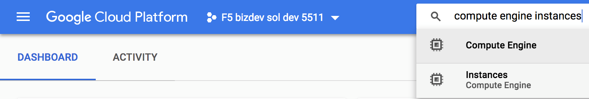
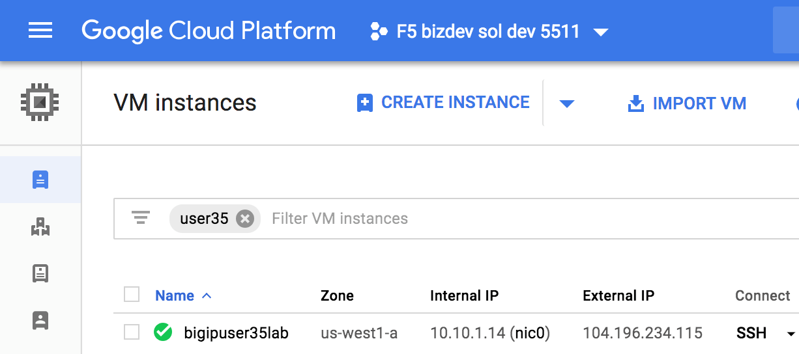
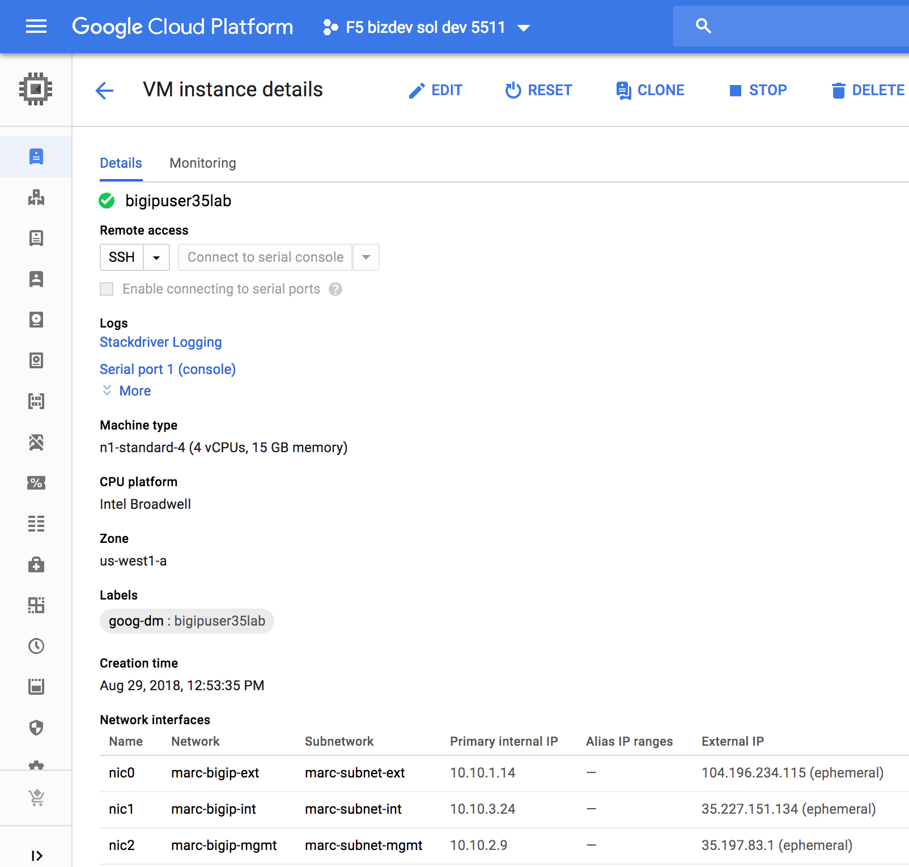
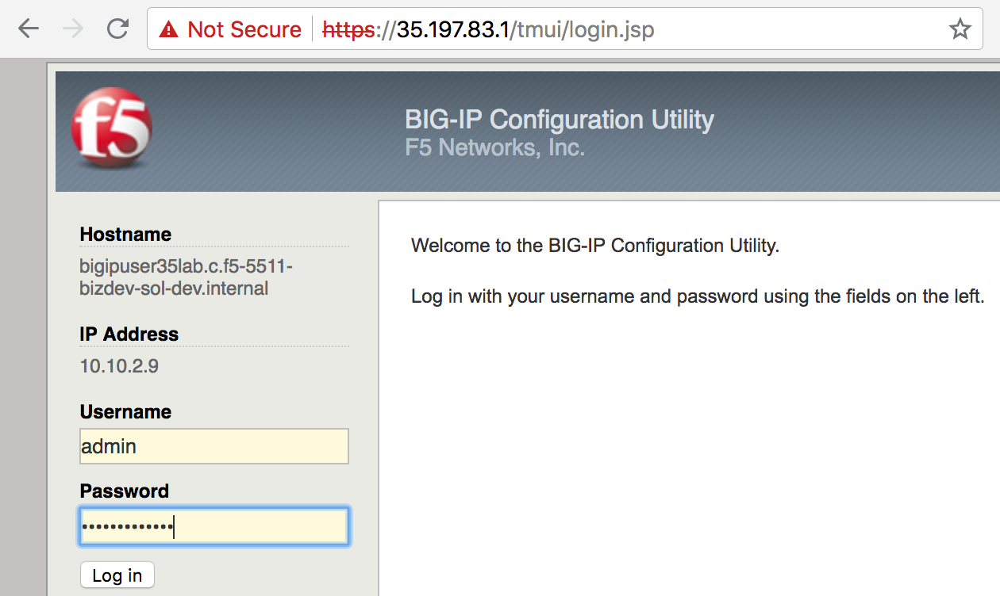
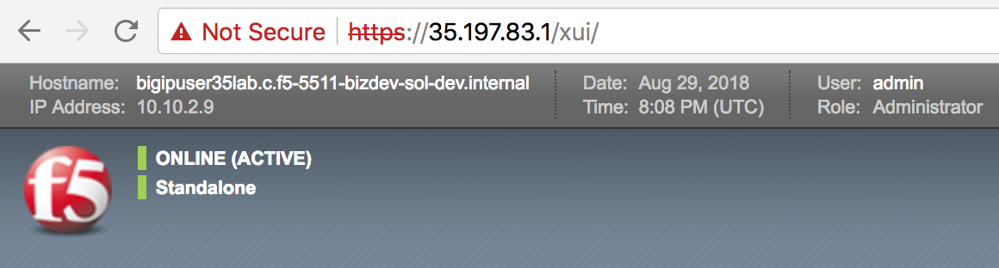

2.1.2. Hands-on Labs¶
Google deployment templates used to deploy the F5 BIG-IPs https://bit.ly/2LDV0Nw
Replace X with the number provided to you by the proctor
Connect as ssh -i userX userX@<instance-X> (<instance-X is an IP address that will be provided to you by the proctor; each student will get his/her own IP address)
2.1.2.1. Lab 1. Deploy 3-NIC F5 BIG-IP using deployment templates¶
curl -L https://bit.ly/2wwDu8i -o lab_f5_gdm_template.zip
unzip lab_f5_gdm_template.zip
nano f5-existing-stack-byol-3nic-changedmgmt-bigip.yaml
…and replace the license with the one provided by the proctor.
Replace X with the number provided to you by the proctor:
gcloud deployment-manager deployments create bigipuserXlab --config f5-existing-stack-byol-3nic-changedmgmt-bigip.yaml
Example for user 35
user35@instance-35:~$ gcloud deployment-manager deployments create bigipuser35lab --config f5-existing-stack-byol-3nic-changedmgmt-bigip.yaml
If you get an error saying that the deployment already exists , you just need to change the deployment name (“bigipuser35lab” in the example above).
Attention
Please just keep “bigipuserX” (replace X with the number assigned to you by the proctor) as part of the name so that we can quickly identify your instances.
After 2 minutes or so, search “compute engine instances” and select “Instances – Compute Engine” as shown below.
{kind=link}
Filter by “userX” to find your 3-NIC F5 BIG-IP instance.
Example for user 35:
{kind=link}
Click on the instance name (“bigipuser35lab” in the example above) to find the F5 BIG-IP’s management IP.
{kind=link}
Write down the management IP of your 3-NIC F5 BIG-IP (screenshot above).
You can now connect to F5 BIG-IP management GUI using https:<F5 BIG-IP’s public IP in GCP> as admin. The password is the one set by the Google deployment template.
 {kind=link}
{kind=link}
Short procedure to deploy F5 active/active and active/standby (not part of the hands-on labs)
- Deploy 2 F5 BIG-IP using Google deployment templates
1a. Download the Google deployment templates
curl -L https://bit.ly/2wwDu8i -o lab_f5_gdm_template.zip unzip lab_f5_gdm_template.zip1b. Edit f5-existing-stack-byol-3nic-changedmgmt-bigip.yaml to fit your environment
1c. Deploy two F5 BIG-IPs
gcloud deployment-manager deployments create marcactive1 --config f5-existing-stack-byol-3nic-changedmgmt-bigip.yaml gcloud deployment-manager deployments create marcactive2 --config f5-existing-stack-byol-3nic-changedmgmt-bigip.yaml
- Get the F5 BIG-IPs’ IP addresses
gcloud compute instances list --filter="NAME~.*marcactive*"NAME ZONE MACHINE_TYPE PREEMPTIBLE INTERNAL_IP EXTERNAL_IP STATUS marcactive1 us-west1-a n1-standard-4 10.10.1.17,10.10.3.26,10.10.2.12 35.197.61.85,35.233.218.10,35.203.135.211 RUNNING marcactive2 us-west1-a n1-standard-4 10.10.1.18,10.10.3.27,10.10.2.13 35.227.174.29,35.227.157.60,104.198.105.51 RUNNING
The Google deployment template we used above creates F5 BIG-IPs with NICs in the following order: external, internal and management. So, 10.10.1.x is F5 BIG-IP external, 10.10.3.x is F5 BIG-IP internal, 10.10.2.x is F5 BIG-IP management
Connect to and configure the first F5 BIG-IP
ssh -i <private key> admin@35.203.135.211 bash SOAPLicenseClient --basekey <license key>
At this point, you should see: [admin@marcactive1:Active:Standalone] ~ #
tmsh mv cm device bigip1 marcactive1.example.com tmsh modify sys global-settings hostname marcactive1.example.com tmsh modify cm device marcactive1.example.com configsync-ip 10.10.3.26 tmsh modify /net self self_internal allow-service all tmsh save sys config
Attention
In a prod env, “allow custom” specifying just the ports you need would be best. These ports are shown at https://support.f5.com/csp/article/K13946
Extract:
Device group members should be able to communicate over ports 443, 4353, 1026 (UDP), and 22 (recommended). BIG-IP ASM requires the following additional Policy Sync TCP ports: 6123-6128. 6699 is also for communication channel between peers.
- Connect to and configure the second F5 BIG-IP
ssh -i <private key> admin@104.198.105.51
bash
SOAPLicenseClient --basekey <license key>
At this point, you should see: [admin@marcactive2:Active:Standalone] ~ #
tmsh mv cm device bigip1 marcactive2.example.com
tmsh modify sys global-settings hostname marcactive2.example.com
tmsh modify cm device marcactive2.example.com configsync-ip 10.10.3.27
tmsh modify /net self self_internal allow-service all
tmsh save sys config
Create the trust domain
On the first F5 BIG-IP:
tmsh modify cm trust-domain /Common/Root add-device { device-ip 10.10.2.13 device-name marcactive2.example.com username admin password <password> ca-device true }
Attention
Escape any special characters in the password.
At this point, you should see:
[admin@marcactive1:Active:In Sync (Trust Domain Only)] ~ #
[admin@marcactive2:Active:In Sync (Trust Domain Only)] ~ #
NOTE: We use the BIG-IP management IP to create the trust domain (10.10.2.x in this example). The actual communication for failover and configsync uses the BIG-IP internal IP (10.10.3.x in this example).
Create the device group
On the first F5 BIG-IP:
tmsh create cm device-group MarcSyncFailover devices add { marcactive1.example.com marcactive2.example.com } type sync-failover save-on-auto-sync true
Attention
The above command create a device group of type “sync-failover” as expected but doesn’t seem to set “sync type” = “automatic with incremental sync”. You can do this from the Configuration utility, navigate to Device Management > Device Groups, select the device group from the list, and change the Sync Type setting to Automatic with Incremental Sync).
At this point, you should see:
[admin@marcactive1:Active:Awaiting Initial Sync] ~ #
[admin@marcactive2:Active:Awaiting Initial Sync] ~ #
Start the initial sync
On the first F5 BIG-IP:
tmsh run cm config-sync to-group MarcSyncFailover
- On both F5 BIG-IP, run
tmsh save sys config
At this point, you should see:
[admin@marcactive1:Active:In Sync] ~ # [admin@marcactive2:Active:In Sync] ~ #
If you want to make this cluster active/standby :
On the first F5 BIG-IP:
tmsh modify /cm device marcactive1.example.com unicast-address {{ ip 10.10.3.26 }}
tmsh modify /cm device marcactive2.example.com unicast-address {{ ip 10.10.3.27 }}
- If you want to make this cluster active/active again
On the first F5 BIG-IP:
tmsh modify /cm device marcactive1.example.com unicast-address none
On the second F5 BIG-IP:
tmsh modify /cm device marcactive2.example.com unicast-address none